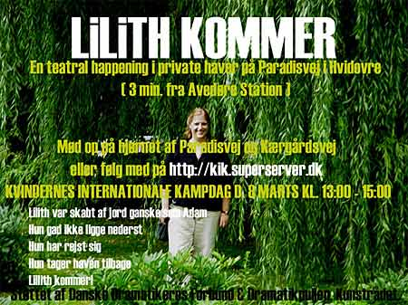

| dunst Recommends: | 8. Marts 2007 |
| Følg os via real time 3G mobilvideosendinger på http://kik.superserver.dk i løbet af dagen  |
|
| Kort religionshistorisk præsentation af ”Lilith”
Hvem er Lilith? Ordet stammer via sumerisk (lil) fra det akkadiske lilitu. Det betyder kvindelig stormdæmon eller stormvind. De to skabelsesberetninger i Bibelen er på sin vis udgangspunktet for den kendte myte: Ifølge den første i 1. Mosebog kap. 1 bliver Adam og Eva skabt samtidig. Ifølge den anden i 1. Mosebog kap. 2 bliver Adam skabt først og Eva bliver derefter skabt af mandens ribben. Ifølge den rabbinsk-jødiske tradition havde Adam imidlertid en kone før Eva: Efter at Gud havde skabt Adam af jorden, skabte han Lilith til Adam, ligeledes af jorden (som i kvindelige agerbrugsreligioner). Adam blev nemlig hurtigt træt af at kopulere med dyr (sodomi, en udbredt praksis blandt hyrder i Mellemøsten). Adam og Lilith begyndte imidlertid at skændes: Hun sagde: Jeg vil ikke ligge nederst, og hans sagde: Jeg vil ikke ligge under dig, men kun ovenpå. For du er bestemt til at ligge underst, mens jeg er bestemt til at være den overlegne. Lilith svarede: Vi er lige, da vi begge er skabt af jorden! Men de ville ikke høre på hinanden. Da Lilith indså, at det ikke nyttede noget, udtalte hun det uudsigelige navn (JHWH) og fløj bort i luften. Adam skyndte sig hen til Gud den Almægtige og sladrede: Herre, den kvinde, du har givet mig, er løbet sin vej. Straks bad den Almægtige tre engle om at gøre sig klar for at tage af sted efter hende. Hvis hun indvilger, sagde den Almægtige, i at vende tilbage, fint. Hvis ikke, vil hundrede af hendes børn dø hver dag. Derpå forlod de tre engle Gud, og de fandt Lilith i midten af Det Røde Hav, det hav, hvori ægypterne druknede, da de prøvede at flygte fra israelitterne. Her avlede hun mere end 100 dæmoner om dagen. De fortalte hende, hvad Gud havde sagt, men hun ville ikke vende tilbage. Englene sagde: Men så vil vi drukne dig! Forsvind! Svarede Lilith. Jeg er blevet skabt for at gøre børn syge! Drengebørn tilhører mig de første 8 dage, pigebørn de første 20 dage af deres liv. Da englene hørte Liliths ord, insisterede de på, at hun skulle komme med tilbage, men hun blev ved med at afvise det, og sværgede følgende: Hvis jeg ser jeres navne eller jeres ansigter i en amulet over det nyfødte barn, vil jeg skåne det. Desuden måtte hun gå med til, at 100 af hendes børn skulle dø hver dag. Hvilket er årsagen til, at hun selv altid er på jagt efter småbørn – i en evig hævn over den forbrydelse, der er begået mod hende. Liliths aftale med englene har sit rituelle sidestykke i et apotropæisk ritual, der indtil det 18. århundrede blev udført i mange jødiske samfund. For at beskytte det nyfødte barn mod Lilith - og specielt et drengebarn indtil sikkerheden efter omskæringen - blev en cirkel tegnet med natron eller kul på væggen i barselsrummet og i cirklen blev skrevet ordene: "Adam og Eva - Ud, Lilith !" Ligeledes blev navnene Senoy, Sansenoy og Semangelof (betydningen ukendt) skrevet på døren. Hvis det alligevel lykkedes Lilith at nærme sig barnet og leje med det, vil barnet le i søvne. For at forebygge faren, mente man, det var en god ide at slå barnet over læberne eller næsen med en finger tre gange - hvorefter Lilith ville forsvinde. Her en oversigt over de vigtigste skriftsteder, hvor Lilith figuren optræder: 1) I gammel sumerisk litteratur fra slutningen af 3. årtusind f.v.t., forløber til oldbabylonske epos om Gilgamesh fra ca. 1800. 2) Fra Nordsyrien 7.-6. århundrede: amuletter mod Lilith (bl.a.). 3) Fra Esajas Bog 34,14 4) Fra Dødehavsrullerne 5) I antik besværgelses- og eksorcismelitteratur 6) Talmud 7) Midrash (Ben Siras Alfabet) 8) Kabbalistisk litteratur. |
|
Pressemeddelelse LILITH KOMMER - KOMMER DU? På torsdag d. 8. marts på Kvindernes Internationale Kampdag i tidsrummet kl. 13.00-15.00 vil vi (dramatiker Gritt Uldall-Jessen, instruktør Annika B. Lewis og skuespiller Ditte Maria le-Fevre) iscenesætte uddrag af en nyskreven teatermonolog om Lilith, der var Adams første kone i paradisets have fra den første skabelsesberetning. Publikum kan møde op kl. 13.00 – 15.00 på Paradisvej (beliggende 3 min. fra Avedøre station) og følge vores prøvearbejde i private haver med dramateksten. Vi vil besøge så mange haver som muligt!
Da Lilith forlod Adam og paradisets have som følge af, at hun ikke ville ligge nederst, blev hun forvist til en ørken, hvor hun huserede som en dæmon. Men var historien sådan? Eller er det udtryk for en nedgørelse af kvindens seksualitet, når hun fravælger missionærstillingen i det heteroseksuelle samleje? Hvorfor bliver hun fortalt som en dæmon, der kopulerer med hyæner, avler flere dæmoner, dræber de førstefødte babyer og forfører mænd på mareridt-agtig vis, når de sover? Hvorfor ville Adam ikke anerkende Liliths seksuelle ligeværd? Vi gider ikke længere sidde overhørig, at den kvinde, der kræver sit ligeværd og sin seksuelle autonomi, straks skal fortælles som en dæmon, der stilles op over for en kvindefigur som Eva. Vi vil en kultur med mangfoldighed af fortællinger, hvor der er flere bud på kvindefigurer, flere måder at praktisere egen seksualitet på og en diskussion af køn og magtforhold imellem køn. Der må være plads til en kultur, hvor den første skabelsesberetning, hvori Liliths historie indgår, fortælles. Kvinden skal ikke kun tildeles en plads nederst i samlejet såvel som på andre områder inden for private forhold såvel som i det øvrige samfund. I vores happening vil Lilith vende tilbage og i symbolsk forstand tage sin paradishave, som hun ikke efter sin flugt herfra, kunne vende tilbage til. Lilith var skabt af jord ganske som Adam. Hun gad ikke at ligge nederst. Hun har rejst sig op. Hun tager haven tilbage. Lilith kommer! Kommer du også? Mød op eller følg os via real time 3G mobilvideosendinger på http://kik.superserver.dk i løbet af dagen d. 8 Marts 2007. Happeningen ”Lilith kommer” er støttet af Danske Dramatikeres Forbund. Den nyskrevene monolog ”Lilith kommer” er støttet af Dramatikpuljen, Kunstrådet og Dramatikercentrum. |
|
| Tilbage |